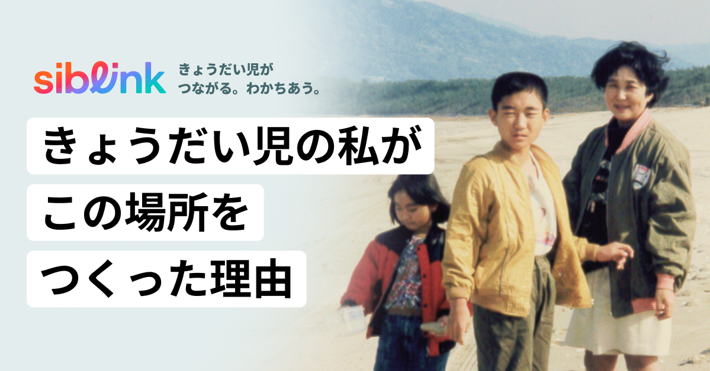

ケアが必要なきょうだいと、生きる。
愛しさも、あきらめも、 使命感も、やるせなさも、
言葉にならない感情が、なだれこむ。
この感情を 打ち明けられる場所は？ 受け止めてくれる場所は？
支援があふれる世の中で、 わたしたち「きょうだい児」は、 透明な存在だ。
siblinkは、 いつでも、あなたのとなりにいる。
人生のどんな場面でも、 一人じゃないと思えるように。
最新記事一覧

「きょうだい児」とは、障害や難病のある兄弟姉妹をもつ きょうだいのことを言います。 この言葉が適切かどうかは議論がありますが、 この経験や立場を表す最適な言葉が存在しないため、 使われ続けています。 「きょうだい児」は、幼少期から思春期、結婚・出産、親亡き後まで、 人生のあらゆる場面で、きょうだいならではの葛藤を抱えることがあります。 近年、認知は少しずつ広まってきましたが、 支援はまだ整っていません。 siblinkは、「きょうだい児」が複雑さを生きながらも、存在を認められ、分かち合い、前に進める場所をつくりたいと考えています。
きょうだい児として感じてきたこと、 気軽に匿名で教えてください。 あなたの声が、次のきょうだい児の 一歩になります。